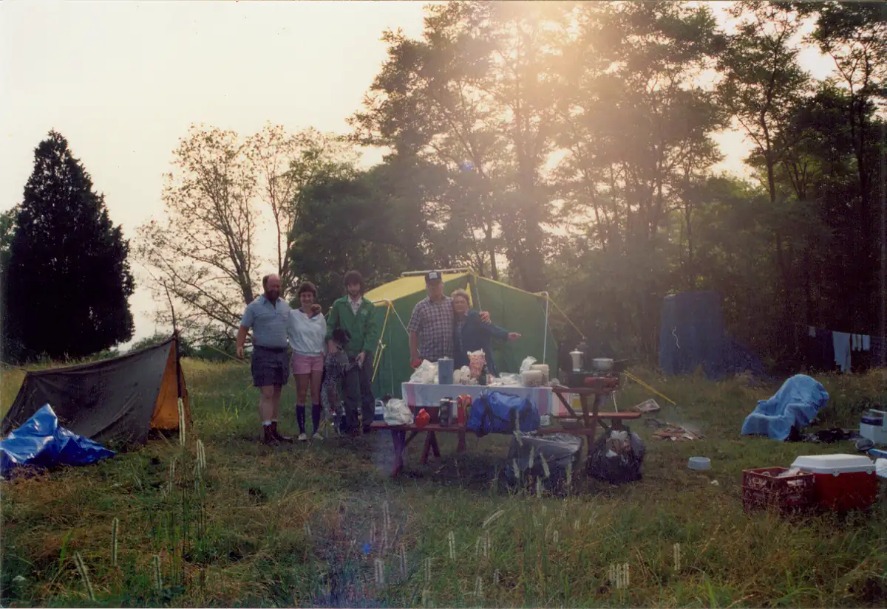

Home / Krehbiels / 023 Krehbiel Roll 1990 West Virginia / kre023-00001
kre023-00001
← Return to 023 Krehbiel Roll 1990 West Virginia
← Prev kre023-00002 →
1990 West Virginia 01 - Bob, Gerry, Tom, Mike, Mary in WV after storm. This picture was taken the morning after a tremendous thunderstorm drenched our camp overnight. Left to Right: Mike, Mary Ann, Tom (holding Abby), Bob, Gerry. West Virginia, summer 1990.

Actual size: 5.82" × 4.00" · Scanned at: 300 dpi · 2.1 MP (1746×1201) · Image date: 13 Aug 2005 · Comment date: 13 Aug 2005
Copyright © 2005–2026 Thomas Krehbiel. Images are freely distributable for personal use. For more information about these images contact Thomas Krehbiel (tkrehbiel@gmail.com).
Photos were scanned at either 300dpi or 600dpi, depending on the quality of the photograph. Slides were scanned at 1800dpi. Documents were scanned at 100dpi or 150dpi. Photoshop enhancements: most images have had their contrast improved. Some color photos were corrected to restore color balance. Some blurry images were mildly sharpened. Occasionally dust, scratches, and blemishes were removed digitally.
{kind=link}